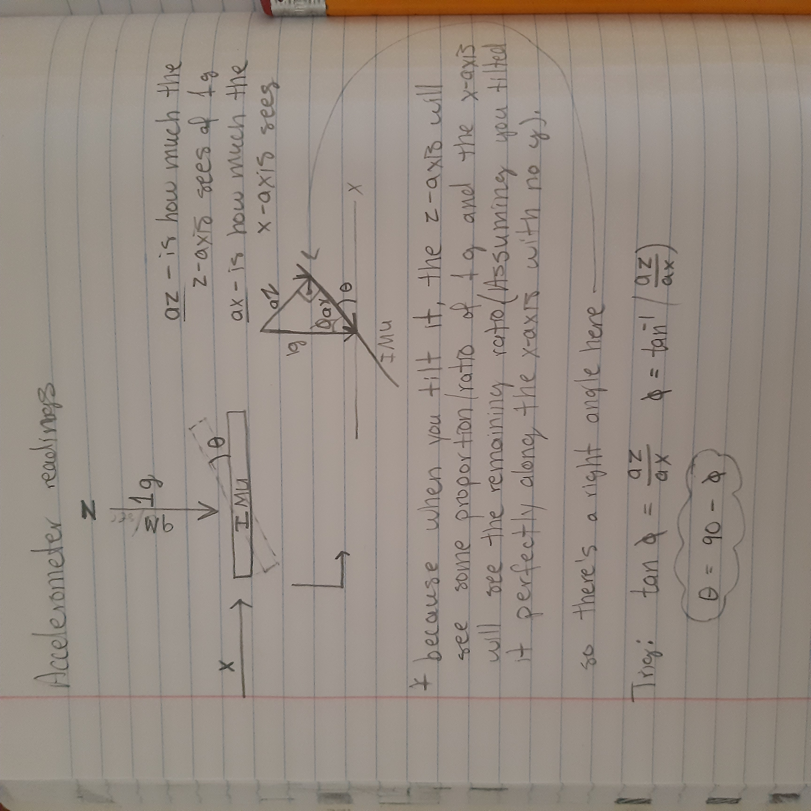

Imu Measurments
For a long time I have always wanted to build robots that know their orientation. And to do that I will first need to learn how Inertial Measurment.
Units, IMU for short, work. I currently only have an MPU6050 which has both a 3-axis accelerometer and a 3-axis gyroscope. But, keep in mind that these are made with MEMS (Micro-electromechanical systems), or cell-phone grade sensors. They will have imperfections.
I first started on a bunch of online tutorials on how to use this and I got the accelerometer to measure angles.
First, we need to hook up the MPU6050 to our Arduino. First, simply connect the voltage pins to 5 volts and ground to negative. Next, we have to connect the i2C pins on the sensor. If you have an Arduino Uno or Nano, connect the SCL and SDA pins to A5 and A4, respectively. If you’re using an Arduino Mega, it has its own SDA and SCL pins, on the communication block. Just connect SCL to SCL and SDA and SDA.
Here is a short piece of code that will do the basic readings from the MPU6050 (also make sure you hooked up the sensor correctly):
#include <MPU6050.h>
// MPU-6050 Short Example Sketch
//www.elegoo.com
//2016.12.9
#include<Wire.h>
const int MPU_addr=0x68; // I2C address of the MPU-6050
int16_t AcX,ACY,AcY,AcZ,Tmp,GyX, GYX,GyY,GyZ;
void setup(){
Wire.begin();
Wire.beginTransmission(MPU_addr);
Wire.write(0x6B); // PWR_MGMT_1 register
Wire.write(0); // set to zero (wakes up the MPU-6050)
Wire.endTransmission(true);
Serial.begin(9600);
pinMode(2, OUTPUT);
}
void loop(){
Wire.beginTransmission(MPU_addr);
Wire.write(0x3B); // starting with register 0x3B (ACCEL_XOUT_H)
Wire.endTransmission(false);
Wire.requestFrom(MPU_addr,14,true); // request a total of 14 registers
AcX=Wire.read()<<8|Wire.read(); // 0x3B (ACCEL_XOUT_H) & 0x3C (ACCEL_XOUT_L)
AcY=Wire.read()<<8|Wire.read(); // 0x3D (ACCEL_YOUT_H) & 0x3E (ACCEL_YOUT_L)
AcZ=Wire.read()<<8|Wire.read(); // 0x3F (ACCEL_ZOUT_H) & 0x40 (ACCEL_ZOUT_L)
Tmp=Wire.read()<<8|Wire.read(); // 0x41 (TEMP_OUT_H) & 0x42 (TEMP_OUT_L)
GyX=Wire.read()<<8|Wire.read(); // 0x43 (GYRO_XOUT_H) & 0x44 (GYRO_XOUT_L)
GyY=Wire.read()<<8|Wire.read(); // 0x45 (GYRO_YOUT_H) & 0x46 (GYRO_YOUT_L)
GyZ=Wire.read()<<8|Wire.read(); // 0x47 (GYRO_ZOUT_H) & 0x48 (GYRO_ZOUT_L)
//Serial.print(" | AcX = "); Serial.println(AcX);
//Serial.print(" | AcY = "); Serial.println(AcY);
Serial.print(" | AcZ = "); Serial.println(AcZ); //Serial.print(" | Tmp = "); Serial.print(Tmp/340.00+36.53); //From the datasheet of MPU6050, we can know the temperature formula
delay(200);
}
But how do you convert these accelerometer measurments to angles?
Well, you use math. Specifically, trig.
People say that you don’t need to know math if you want to be a programmer. And that’s mostly true: if you want to be a low level coder. But if you want the be a real programmer, then you will need to master the fundamentals of math!

If you’d like a more detailed explanation: click here
And you could probably put this in your Arduino code by using the Math library. And you could also do something similar for the other 2 axes.
Later, my immature brain, thought it was a good idea to control a foam glider with these measurments.
It didn’t work at all!!
Why?
Because the accelerometer measures accelerations on the sensor. So it is sensative to vibrations, which are very common on a plane. So I tried to apply a Low Pass Filter. Which basically filters out high frequency change, or vibrations. But this resulted in it being slow.
So how do we fix the problem? Well we could use the gyroscope.
To learn how to do this, I wathced Paul McWhorter’s IMU lessons which was a huge help. He is awesome and a great teacher. I tried to implement the same things on my MPU6050.
Here is the code:
#include <MPU6050.h>
#include<Wire.h>
const int MPU_addr=0x68; // I2C address of the MPU-6050
int16_t AcX,ACY,AcY,AcZ,Tmp,GyX, GYX,GyY,GyZ;
float thetaG=0;
float phiG=0;
float theta;
float phi;
float dt;
unsigned long millisOld;
void setup() {
// put your setup code here, to run once:
Serial.begin(9600);
Wire.begin();
Wire.beginTransmission(MPU_addr);
Wire.write(0x6B); // PWR_MGMT_1 register
Wire.write(0); // set to zero (wakes up the MPU-6050)
Wire.endTransmission(true);
millisOld=millis();
pinMode(9, OUTPUT);
}
void loop() {
// put your main code here, to run repeatedly:
Wire.beginTransmission(MPU_addr);
Wire.write(0x3B); // starting with register 0x3B (ACCEL_XOUT_H)
Wire.endTransmission(false);
Wire.requestFrom(MPU_addr,14,true); // request a total of 14 registers
AcX=Wire.read()<<8|Wire.read(); // 0x3B (ACCEL_XOUT_H) & 0x3C (ACCEL_XOUT_L)
AcY=Wire.read()<<8|Wire.read(); // 0x3D (ACCEL_YOUT_H) & 0x3E (ACCEL_YOUT_L)
AcZ=Wire.read()<<8|Wire.read(); // 0x3F (ACCEL_ZOUT_H) & 0x40 (ACCEL_ZOUT_L)
Tmp=Wire.read()<<8|Wire.read(); // 0x41 (TEMP_OUT_H) & 0x42 (TEMP_OUT_L)
GyX=Wire.read()<<8|Wire.read(); // 0x43 (GYRO_XOUT_H) & 0x44 (GYRO_XOUT_L)
GyY=Wire.read()<<8|Wire.read(); // 0x45 (GYRO_YOUT_H) & 0x46 (GYRO_YOUT_L)
GyZ=Wire.read()<<8|Wire.read(); // 0x47 (GYRO_ZOUT_H) & 0x48 (GYRO_ZOUT_L)
dt=(millis()-millisOld)/1000.;
millisOld=millis();
thetaG=thetaG+GyY*dt;
phiG=phiG+GyX*dt;
Serial.print(",");
Serial.print(thetaG);
Serial.print(",");
Serial.println(phiG);
//Serial.println(thetaG);
delay(10);It works by looking at the angular velocity (what the gyro outputs) in a time period (in milliseconds) and with simple math converts that to angles.
But if you were to run the code, you will see that even if we don’t apply any rotation on the device, the ouptut line will have a positive slope. Meaning that it thinks we are rotating at a constant velocity, even if we aren’t. This phenomenon is known as gyro drift. Because the value is drifting off. This happens becuase we are also integrating the gyro’s inperfections, like noise. And over time, these errors add up, causing unwanted drift.
At this point, I had realized that the BNO055 9-axis IMU is much higher quality than the MPU6050. It’s also what Mr. McWhorter uses. So I ordered and hooked it up to my Arduino Nano, and this time, fully followed his tutorials.
And the BNO055 still had drift, but it was a bit more subtle.
Now, there are are bunch of ways you could fix this:
-
Apply some sort of filter to fuse the Accel. and Gyro. values to get orientation.
-
Use the specs of the individual IMU, and some math, to counter act the drift.
-
Or use the Quaternions outputed by the BNO055
I actually, over time, ended up tring out all of them. And I think the quaternion option is most efficient, but more math heavy. As for the fusion one, you have some options: Paul shows us how to implement a complimentary filter, which is a decent and intuitive algorithm. However, if you want to use your IMU for anything more vibration intensive than a small quadcopter, then you’ll need a better algorithm. Like the Kalman Filter. This filter is really common among professionals, and their are several tutorials and Arduino Libraries that would help with that.
Also, there are several other filters, like the Madwick and Mahony filters. But these are mainly used with a magnetometer for heading.
But since I am an extreme DIY person, I thought I was up to the task of learning the math behind the Kalman Filter. With the help of Joe Barnard from BPS.Space, I thought it was a good idea to buy this book: Optimal State Estimation by Dan Simon.
Yikes!!
Even though I am pretty good at AoPS, this book is not 8th/9th grade friendly. I quickly tried to learn some Linear ALgebra then gave this book a try. And I got somewhere, but not enought to implement a Kalman Filter, so I put this book on hold until I had gained some knowledge.
For refrence, this Kalman thing happened in the beginning of 2022, so in my 9th grade year. However, everything from quaternions and other algorithms happened a year before this Kalman stuff. So I am kind of jumping around the time line here, for you sake.
But, back to the 8th grade:
The first one I learned was the simple complimentary filter. It fuses the accelerometer values with the gyroscope values. But make sure you use the non-filter accelerometer values and the already integrated gyroscope values.
The intuitive explanation here is somewhat derived from Paul McWhorter.
If you’ve noticed, the accelerometer values can be trusted over the long term , but not over the short term because the accelerometer is sensative to vibration; creating short term noise in the signal. And the gyro can’t be trusted over the long term, because of the drift over time; however, it can be trusted in the short term.
So, we have to apply a low pass filter to the accelerometer values and a high pass filter on the gyro. The low pass filter puts a weighted bias on the old value and doesn’t really trust the new values. Where the two weights add up to 1. Accordingly, a High pass filter on the gyro accomplishes the same thing, just the opposite way.
This line of code should accomplish the filter:
theta=(theta+gyr.y()*dt)*.95+thetaM*.05;
The theta is pitch. So our current theta is equal to out old theta plus the gyro angle times the bias. Now here the gyro bias is 95%. That means we take 95% of our gyro angle, and this is added to 5% of the accelerometer angle. So over time, we are ever so slightly nudging the gyro value to the accelerometer value. Effectively, getting rid of the drift. But this only works on gyros with small drift. If the drift is higher, you might want to take less of the gyro, and more of the accelerometer.
Here is a good refrence video: Brian Douglas
But this needs some tweaking to be used on a drone. Also, you would need to calibrate the gyro. Furthermore, this is subject to gimble lock. This happens when the y-axis is pointing staight up or straight down, + or - 90 degrees. We can overcome this by using complex numbers.
Now, this blog it already getting pretty long, so I will have to summarize a lot. However, if you use the specs from the MPU6050 datasheet, you will be able to minimize the drift. It will still be their, but it won’t be as aggressive. For mor info, watch this video by Joop Brooking.
Finally, for the quaternions. Now this math is heavy and I don’t completely understand it, so I won’t be able to explain it very well. But basically, quaternions are an extension to the comlex numbers, and can describe 3 dimensional rotations with 4 numbers, or the 4th dimension.
*Please let me know if I am wrong about any of this.
But, to get quaternions from the BNO055 is easy:
uint8_t system, gyro, accel, mg = 0;
myIMU.getCalibration(&system, &gyro, &accel, &mg);
imu::Quaternion quat=myIMU.getQuat();
q0=quat.w();
q1=quat.x();
q2=quat.y();
q3=quat.z();
rollActual=atan2(2*(q0*q1+q2*q3),1-2*(q1*q1+q2*q2));
pitchActual=asin(2*(q0*q2-q3*q1));
rollActual=rollActual/(2*3.141592654)*360;
pitchActual=pitchActual/(2*3.141592654)*360;
where q0-q4 are predefined.
And after that we got the quaternion values, we can use 3 dimensional trig. to convert them to eular angles. Again, my main source here was Paul McWhorter’s lessons.
But also check out this wiki on the quaternion to eular conversion, and this Stanford lecture on IMUs.
And that’s it.
I will definetly making more post on the specifics on each, this was kind of an overview/summary.
Hope you enjoyed!!
Subscribe to Burak Ayyorgun
Get the latest posts delivered right to your inbox